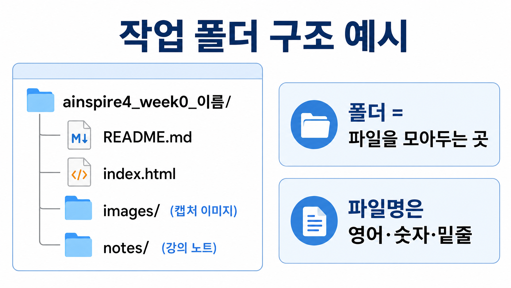
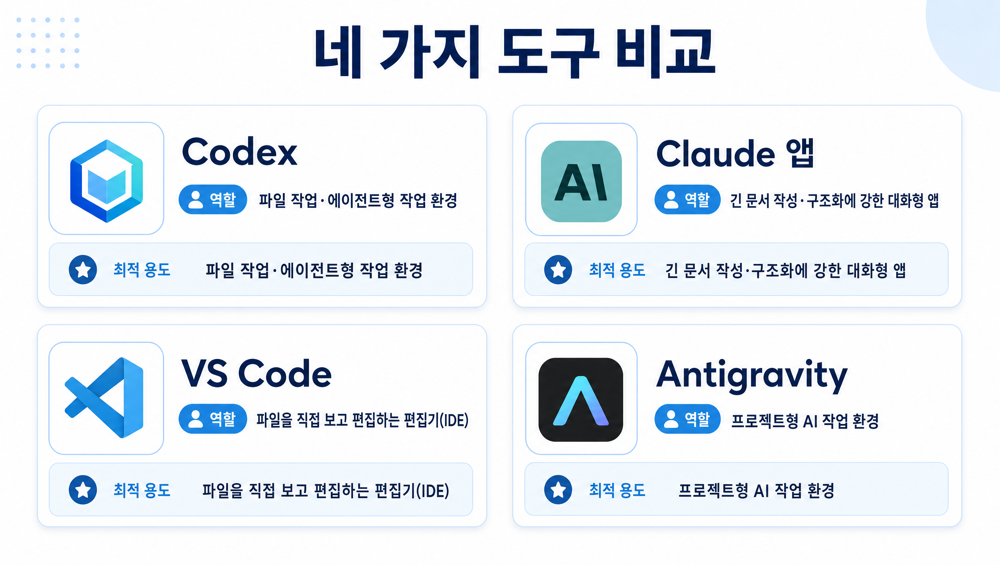
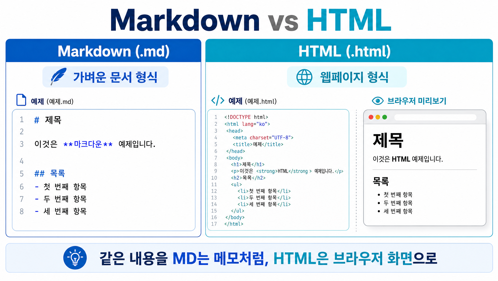

AINSPIRE 4기 · 0주차
설치 · 실행 · AI 작업 환경
비개발자를 위한 첫 시작 — 설치부터 결과물까지
권장 총 시간: 2~3시간 오늘 0주차 본문에서 설치·첫 실행할 도구: Codex / Claude 앱 / VS Code / Antigravity 네 가지 모두 오늘 결과물 제작의 최소 조합: Claude 앱으로 초안 요청 → VS Code에서 직접 저장·편집 → 브라우저에서 확인 Codex와 Antigravity는 0주차에서 설치·첫 실행·작업 환경 확인까지 진행하되, 자동 적용·대량 수정·외부 연동은 하지 않습니다. 각 도구의 정확한 기능, 제공 방식, 모델명, 가격, 권한 문구는 강사가 공식문서로 확인 필요합니다.
오늘의 흐름
1오프닝: 오늘 끝낼 것과 하지 않을 것
20주차 최소 용어: 실습 전에 이 6개만 알고 가기
3설치 전 준비와 OS별 안전 체크
4작업 폴더 만들기와 파일 확장자 준비
5네 가지 도구 설치·첫 실행: 한 섹션에서 빠르게 끝내기
6초반 실습 1: `README.md` 만들기
7실습 2: `index.html` 만들고 브라우저에서 확인하기
8수정 요청, 검수, 저장 습관 만들기
9막혔을 때의 백업 플랜
10결과물 제출과 다음 주차 준비
11[부록·뒤 주차 후보]
1
오프닝: 오늘 끝낼 것과 하지 않을 것
0주차가 끝났을 때 무엇을 만들고, 무엇은 다루지 않는지 설명할 수 있다.
1
오프닝: 오늘 끝낼 것과 하지 않을 것
- 1.1 오늘의 완성 결과물: `README.md` 1개와 `index.html` 1개
- 1.2 오늘의 작업 흐름: 설치/접속 → 작업 폴더 → 파일 생성 → 브라우저 확인 → 수정 요청 → 저장
- 1.3 오늘 사용하는 네 도구의 층위 구분
- 1.4 오늘의 실습 원칙: AI가 도와줘도 파일은 내가 직접 확인하고 저장한다
- 1.5 오늘 하지 않는 것: 자동화와 고급 연결은 전부 제외

2
0주차 최소 용어: 실습 전에 이 6개만 알고 가기
첫 실습 전에 파일 작업에서 막히는 최소 용어를 구분할 수 있다.
2
0주차 최소 용어: 실습 전에 이 6개만 알고 가기
- 2.1 파일: 실제로 저장되는 결과물
- 2.2 폴더: 파일을 모아두는 위치
- 2.3 확장자: `.md`, `.html`, `.txt`의 차이
- 2.4 브라우저: HTML 결과를 확인하는 화면
- 2.5 권한: 앱이 파일을 읽거나 저장해도 되는지 묻는 요청
- 2.6 저장 위치: 내 파일이 어디에 있는지 확인하는 기준
3
설치 전 준비와 OS별 안전 체크
설치와 로그인 전에 필요한 준비물을 점검하고, 권한 요청이 떠도 당황하지 않을 수 있다.
3
설치 전 준비와 OS별 안전 체크
- 3.1 공통 준비물: 이메일 계정, 비밀번호, 2단계 인증, 인터넷, 확인용 브라우저
- 3.2 Windows 준비: 다운로드 폴더, 설치 권한, 파일 확장자 표시 위치 확인
- 3.3 Mac 준비: 다운로드 폴더, 보안 경고, 앱 권한, 기본 편집기 저장 형식 확인
- 3.4 권한 요청 원칙: 강의 폴더 접근만 허용하고 모르면 보류
- 3.5 결제·요금·모델 선택 화면이 나오면 강사 확인 전 진행하지 않기
- 3.6 설치 화면·로그인 방식·요금·모델 안내는 강사가 공식문서로 확인 필요
4
작업 폴더 만들기와 파일 확장자 준비
강의 파일을 저장할 작업 폴더를 만들고, `.md`, `.html`, `.txt` 확장자를 구분할 수 있다.
4
작업 폴더 만들기와 파일 확장자 준비
- 4.1 강의용 폴더 만들기: `ainspire4_week0_이름`
- 4.2 작업 폴더와 다운로드 폴더 구분하기
- 4.3 파일명 규칙: 영어, 숫자, 밑줄 중심으로 간단하게 쓰기
- 4.4 확장자 표시 확인: `.md`, `.html`, `.txt`가 보이게 하기
- 4.5 자주 나는 실수: `index.html.txt`로 저장되는 문제 예방하기
- 4.6 OS별 경로 감각: 문서, 다운로드, 바탕화면 위치 다시 찾기

5
네 가지 도구 설치·첫 실행: 한 섹션에서 빠르게 끝내기
Codex, Claude 앱, VS Code, Antigravity를 모두 설치·첫 실행하고, 각 도구의 역할 차이를 구분할 수 있다.
5
네 가지 도구 설치·첫 실행: 한 섹션에서 빠르게 끝내기
- 5.1 진행 원칙: 네 도구 모두 설치·첫 실행, 막히면 표시하고 넘어가기
- 5.2 Claude 앱 실행: 대화형 AI 작업 앱
- 5.3 VS Code 실행: 파일을 직접 보고 편집하는 편집기, IDE
- 5.4 Codex 실행: AI가 파일 작업을 돕는 작업 환경
- 5.5 Antigravity 실행: 프로젝트형 AI 작업 환경
- 5.6 브라우저 준비: HTML 파일 확인 용도로만 사용
- 5.7 오늘의 기본 설정: 모델 비교 없이 기본 설정으로 진행

6
초반 실습 1: `README.md` 만들기
AI가 만든 텍스트를 내 작업 폴더의 Markdown 파일로 저장하고 한 번 수정할 수 있다.
6
초반 실습 1: `README.md` 만들기
- 6.1 만들 내용 정하기: 오늘 목표, 자기소개 2줄, 체크리스트
- 6.2 Claude 앱에 요청하기: `README.md`로 쓸 짧은 문서 작성 요청
- 6.3 VS Code에 붙여넣고 `README.md`로 저장하기
- 6.4 파일 목록에서 확장자와 저장 위치 확인하기
- 6.5 수정 요청하기: 문장 줄이기, 체크박스 추가, 개인정보 제거
- 6.6 저장 후 다시 열어 완료 확인하기
- 6.7 Claude 앱이 막히면 강사 제공 예시 텍스트로 계속 진행하기
7
실습 2: `index.html` 만들고 브라우저에서 확인하기
HTML 파일을 만들고 브라우저로 열어 수정 결과를 확인할 수 있다.
7
실습 2: `index.html` 만들고 브라우저에서 확인하기
- 7.1 주제 선택: 자기소개 페이지 또는 오늘의 체크리스트 중 1개
- 7.2 Claude 앱에 HTML 요청하기: 간단한 한 페이지, JavaScript 없이 작성 요청
- 7.3 `index.html`로 저장하기: `.txt`가 붙지 않았는지 확인
- 7.4 브라우저에서 열기: 더블클릭, 열기 메뉴, 드래그 중 가능한 방법 사용
- 7.5 수정 요청하기: 제목, 문구, 목록 중 1곳만 변경
- 7.6 저장 → 새로고침 → 변경 확인 순서 익히기

8
수정 요청, 검수, 저장 습관 만들기
AI의 결과를 그대로 믿지 않고 수정 전후를 확인한 뒤 안전하게 저장할 수 있다.
8
수정 요청, 검수, 저장 습관 만들기
- 8.1 수정 요청 문장: “이 파일에서 OO만 바꿔줘”
- 8.2 바뀐 부분 확인: 제목, 문장, 목록, 링크, 개인정보
- 8.3 저장 단축키: Windows `Ctrl+S`, Mac `Cmd+S`
- 8.4 브라우저 확인 순서: 저장 → 새로고침 → 화면 비교
- 8.5 수동 백업: `README_v1.md`, `index_v1.html` 복사본 만들기
- 8.6 위험 작업 보류: 삭제, 덮어쓰기, 강의 폴더 밖 접근 요청은 멈추기
- 8.7 Codex와 Antigravity에서 자동 적용·전체 수정 제안이 나오면 0주차에서는 실행하지 않기
9
막혔을 때의 백업 플랜
설치, 로그인, 파일 저장, 브라우저 확인이 실패해도 대체 방법으로 실습을 끝낼 수 있다.
9
막혔을 때의 백업 플랜
- 9.1 Claude 앱 설치/로그인 실패: 강사 제공 예시 텍스트로 계속 진행
- 9.2 VS Code 설치 실패: 메모장, TextEdit 등 OS 기본 편집기로 파일 만들기
- 9.3 Codex 또는 Antigravity 실행 실패: 강사 화면으로 역할만 확인하고 결과물 실습은 계속 진행
- 9.4 `.html`이 `.txt`로 저장될 때: 확장자 표시와 다른 이름 저장 확인
- 9.5 파일을 못 찾을 때: 작업 폴더, 다운로드 폴더, 최근 항목 확인
- 9.6 권한·보안 경고가 뜰 때: 화면 캡처 후 강사에게 확인
- 9.7 결제·업그레이드·요금 화면이 뜰 때: 결제하지 않고 강사 확인
- 9.8 지원 요청 양식: OS, 오류 화면, 사용 도구, 파일명, 저장 위치
10
결과물 제출과 다음 주차 준비
제출해야 할 파일과 완료 기준을 확인하고, 다음 주차 전에 해결할 일을 정리할 수 있다.
10
결과물 제출과 다음 주차 준비
- 10.1 제출 파일: `README.md`, `index.html`
- 10.2 선택 제출물: 브라우저에서 열린 `index.html` 화면 스크린샷
- 10.3 완료 기준: 파일 2개 생성, 수정 1회 반영, 브라우저 확인, 저장 위치 확인
- 10.4 제출 위치: 강사가 지정한 LMS, 폼, 공유폴더 사용
- 10.5 제출 전 개인정보 점검: 이메일, 전화번호, 회사 자료, 계정 화면 제거
- 10.6 다음 주차 전 할 일: 설치 미완료 해결, 질문 기록, 폴더 백업
11
[부록·뒤 주차 후보]
0주차 본문에서 제외한 주제를 정리해 두고, 적절한 후속 주차로 분류한다.
11
[부록·뒤 주차 후보]
- 11.1 0주차에서 이름만 언급해도 되는 범위
- 11.2 뒤 주차로 이동할 주제 분류표
오늘 만든 결과물
📄
README.md
🌐
index.html
🖥️
브라우저 확인
설치 → 폴더 → 파일 생성 → 확인 → 수정 → 저장.
오늘 이 흐름을 직접 경험했습니다.